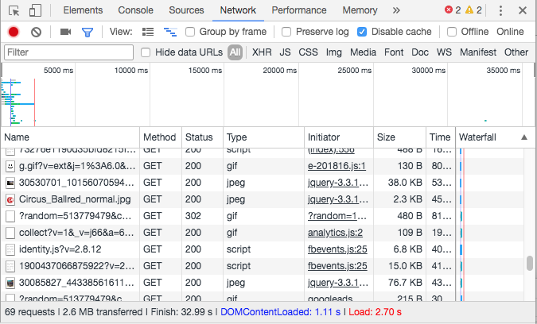

Week 4
Big Images and Video
Why Images Matter
Websites are getting bigger.
Images account for majority of a page's size.
Free Sources
Big Images Look Good
HugeBrightlabs
Image optimization is the quickest route to improving page performance.
How to Check Image Size
On your computer and in the browser.
Finder / Explorer
List view will have a column.
Column view also shows dimensions.
Chrome Dev Tools

Spritesheets
Fewer network requests is better.
Icons
SVG Sprites from Fontawesome
Image Formats
The major ones at least
- JPG
- PNG
- SVG
- GIF
JPG
Good for:
- Photographs
- High complexity images
PNG
Good for:
- Illustrations
- Hard edges
- Transparency
SVG
Good for:
- Vector art
- Icons
- Large, simple images
We'll dig deep later on
GIF
Good for:
- Nothing
- Email maybe
- Ugh
Compressing JPG
Photoshop - Save for Web
You cannot beat the tools here.
Compressing PNG
Isn't PNG lossless?
Lossy compression with Image Alpha.
Dimensions
Use images at the right dimensions.
Designers will often hand off ultra high res.
Size images for their role
- Background images don't have to be huge
- Use thumbnails or lazy loading for high-res content
- Use srcset for different screen sizes
Srcset
(source set)
Responsive images through multiple resolutions
Basic Example
List multiple image sized

Width
- Specifies the width of each file
- Browser picks based on screen width
Sizes
- Tell the browser about your breakpoints
- How big images will be at different window sizes

Additional Info
- Display density
- Picture element
Lazy Loading
Don't load images that are not in view
The Attribute
lazy, eager, auto

Defaults to auto
Video
What platforms, and how?
Use Vimeo if...
- Your video is your content
- You need the latest streaming technology
- You can pay for pro features
Use HTML5 if...
- Your videos enhance your content
- You need total control over your videos
- You need to do atypical things with your video
- You need to be able to update and change things quickly
Some Real World Examples
We Are RoyaleDigital Kitchen
And some best practices.
Video in the Background
Autoplay only works in specific situations
Compressing Video
Convert to H.264 mp4
Use Handbrake: handbrake.fr